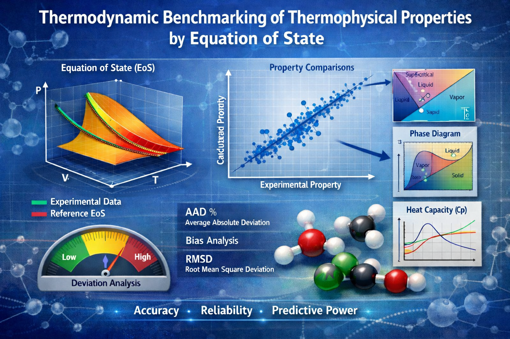

ThermoBench: DFF
$850K
Benchmarking of equation of state for thermophysical properties.
Team
Javad Amanabadi
PhD Student
PhD Student
Kaiqi Li
Master student
Master student
Publications
Evaluation of thermodynamic models for the prediction of derivative properties for non-polar compounds
J Amanabadi, GM Kontogeorgis, X Liang
Fluid Phase Equilibria 594, 114366
J Amanabadi, GM Kontogeorgis, X Liang
Fluid Phase Equilibria 594, 114366